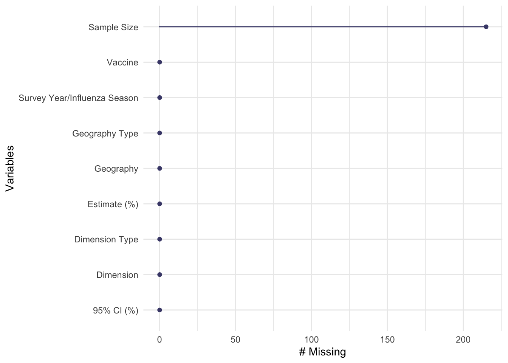
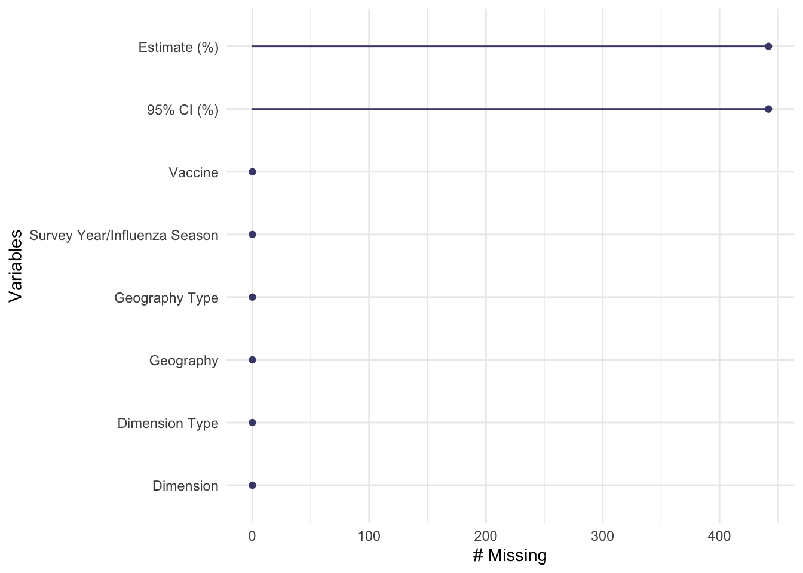
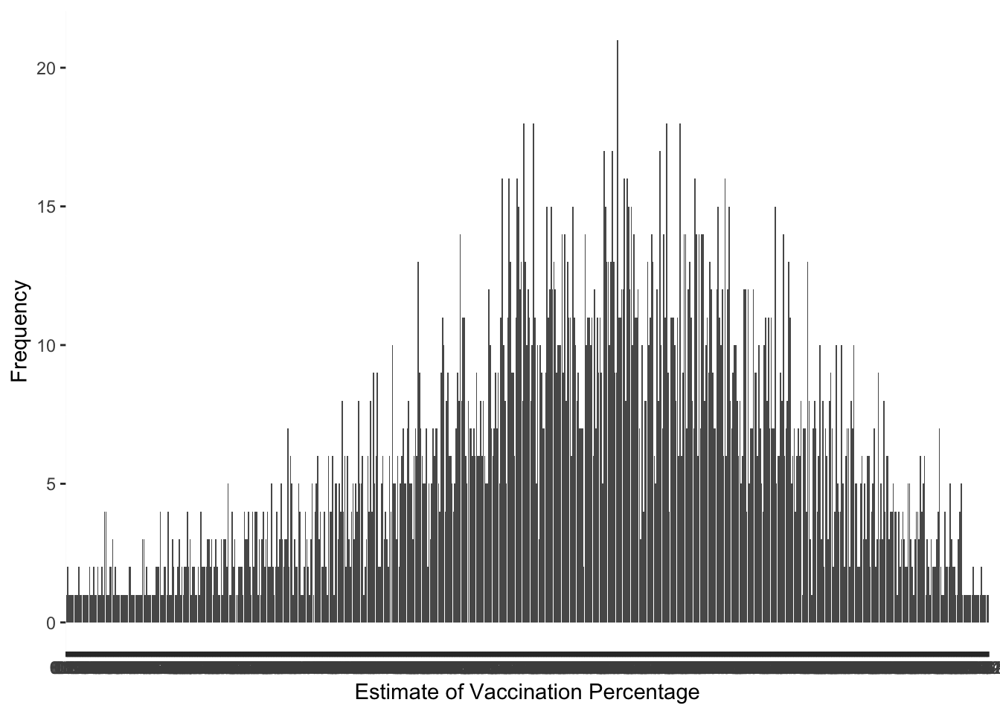
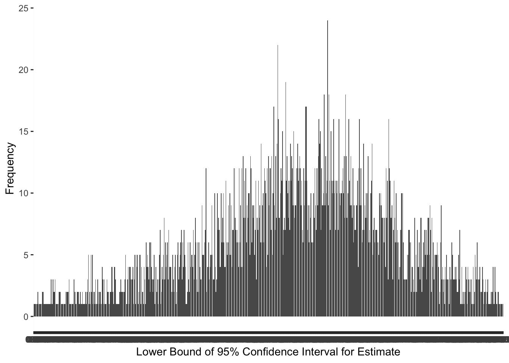
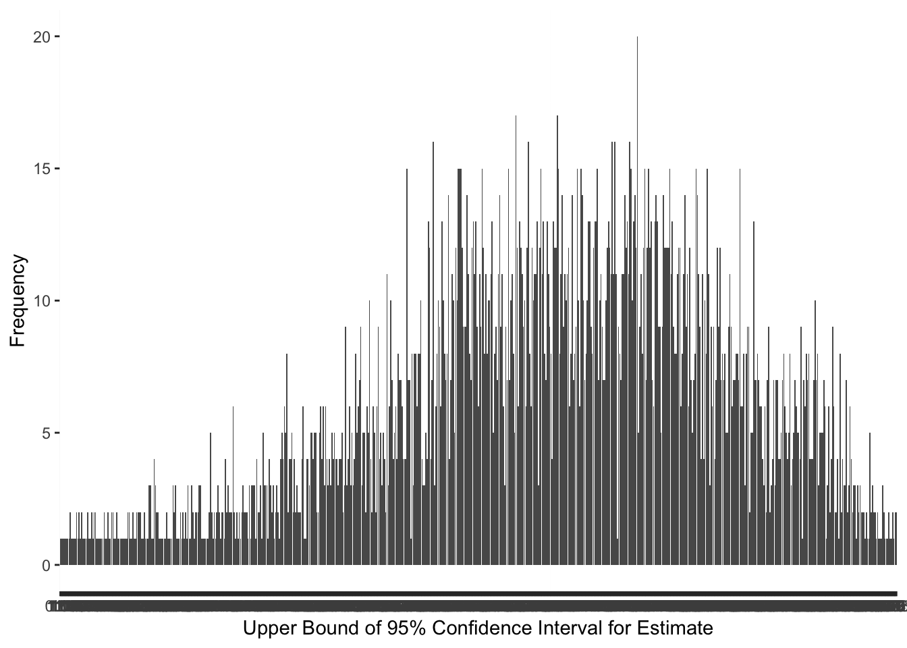
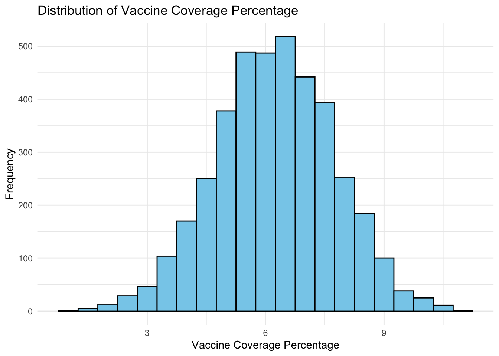
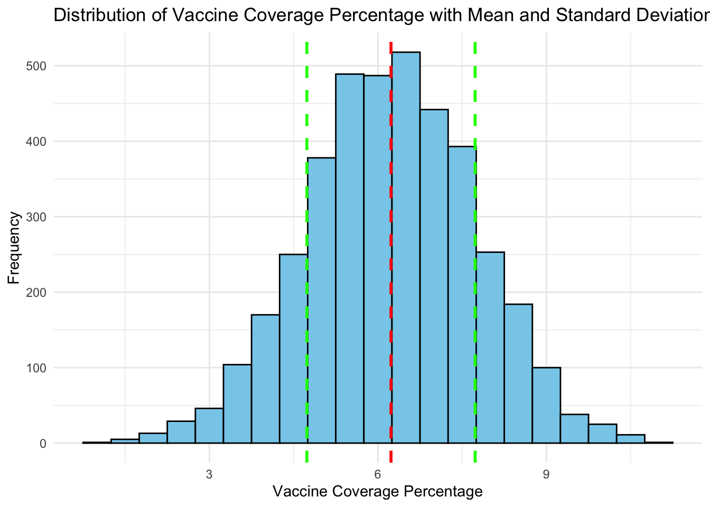
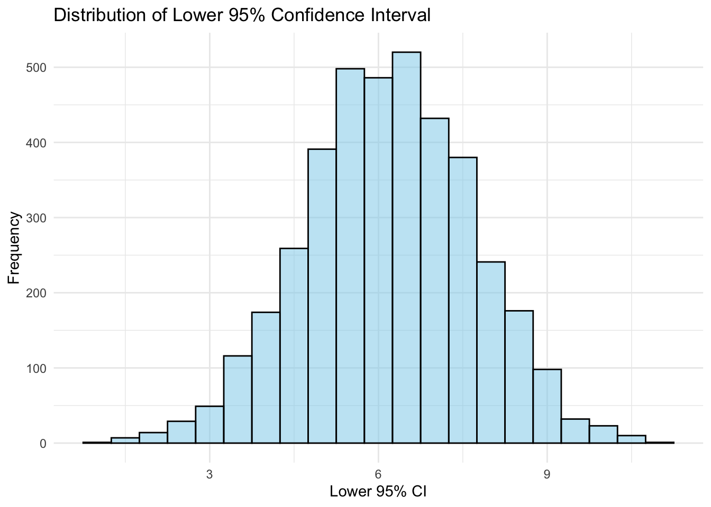

Exploring CDC Data: Vaccination Coverage Among Pregnant Women
Description of the data
I found this data set from the CDC’s data log under the pregnancy and vaccination section. The data was provided by the National Center for Immunization and Respiratory Diseases (NCIRD), and the information was collected through the Pregnancy Risk Assessment Monitoring System (PRAMS). Information includes vaccination rates at the state level for influenza and tetanus toxoid, reduced diptheria toxoid, and aceullar pertussis (Tdap) for women who recently gave birth. Variables include vaccine type, geography, survey year/influenza season, dimension (age or race), and estimation of vaccination coverage with 95% confidence interval. It was most recently updated on December 15, 2023 and contains 4,379 observations of 9 variables. Link: https://data.cdc.gov/Pregnancy-Vaccination/Vaccination-Coverage-among-Pregnant-Women/h7pm-wmjc/about_data
Read and load the data
I loaded two packages for this step: readr and here. I called the data ‘pregvacc’. After reading and loading the data, I confirmed that there were 4,379 observations of 9 variables.
## load packageslibrary(readr)library(here)
here() starts at /Users/taylorglass/Documents/MADA /taylorglass-MADA-portfolio
##read in data and find dimensionspregvacc <-read_csv(here("cdcdata-exercise", "Vaccination_Coverage_among_Pregnant_Women_20240205.csv"))
Rows: 4379 Columns: 9
── Column specification ────────────────────────────────────────────────────────
Delimiter: ","
chr (7): Vaccine, Geography Type, Geography, Dimension Type, Dimension, Esti...
dbl (2): Survey Year/Influenza Season, Sample Size
ℹ Use `spec()` to retrieve the full column specification for this data.
ℹ Specify the column types or set `show_col_types = FALSE` to quiet this message.
dim(pregvacc)
[1] 4379 9
Processing the data
Using the naniar package to discover missingness of the data shows that this data set is pretty clean. Sample size is the only variable with missing data, and it has 215 missing observations. Sample size is an important variable for determining the reliability of the vaccination coverage estimation percentages. The ‘data quality’ section of the CDC page for this data set notes that observations marked with an asterisk are unreliable due to a sample size of less than 30. After exploring the variable, the minimum value is exactly 30, so none of the estimates are less than 30. I feel confident in removing this variable from the data set because all of the vaccination coverage estimates with complete data are reliable based on the sample size variable.
## load packageslibrary(naniar)library(dplyr)
Attaching package: 'dplyr'
The following objects are masked from 'package:stats':
filter, lag
The following objects are masked from 'package:base':
intersect, setdiff, setequal, union
library(stringr)## explore missingness of the data gg_miss_var(pregvacc)

sum(is.na(pregvacc$`Sample Size`))
[1] 215
summary(pregvacc$`Sample Size`)
Min. 1st Qu. Median Mean 3rd Qu. Max. NA's
30.0 167.0 320.5 797.2 655.2 43737.0 215
## create new dataset without the sample size variablepregvacc2 <- pregvacc %>%select(-`Sample Size`)
Using the head() function, I saw “NR” in the estimate of vaccination coverage and confidence interval variables, which also represents missing data. With assistance from AI tools, I wrote a function to rid the data of any “NR” variables or special characters using the dplyr and stringr packages. I found that there are 442 missing observations of the estimate variable and confidence interval variables. Considering that the data set contains 4,379 observations, only 10% of the observations have a missing estimate value for vaccination coverage. I think it is okay to remove the missing observations in this scenario because each state has multiple observations across several years of PRAMS data. Information about vaccination among pregnant women is included for all 50 states based on various ages and races/ethnicities, so I think it is reasonable to remove 10% of the data set for this analysis.
## examine data again head(pregvacc2)
# A tibble: 6 × 8
Vaccine `Geography Type` Geography Survey Year/Influenza …¹ `Dimension Type`
<chr> <chr> <chr> <dbl> <chr>
1 Influenza States Alaska 2012 Age
2 Influenza States Alaska 2020 Age
3 Influenza States Alaska 2020 Race and Ethnic…
4 Influenza States Alaska 2012 Age
5 Influenza States Alaska 2012 Race and Ethnic…
6 Influenza States Alaska 2020 Age
# ℹ abbreviated name: ¹`Survey Year/Influenza Season`
# ℹ 3 more variables: Dimension <chr>, `Estimate (%)` <chr>, `95% CI (%)` <chr>
## create a function to clean the dataclean_data <-function(data) { data[data =='NR*'] <-NA data <- data %>%mutate_if(is.character, str_replace_all, pattern ="[^a-zA-Z0-9\\s]", replacement ="")return(data)}## use the clean_data function to create the third version of the datasetpregvacc3 <-clean_data(pregvacc2)## explore the new NAs created by the clean_data function gg_miss_var(pregvacc3)

sum(is.na(pregvacc3$`Estimate (%)`))
[1] 442
sum(is.na(pregvacc3$`95% CI (%)`))
[1] 442
missing <-442/4379*100head(pregvacc3)
# A tibble: 6 × 8
Vaccine `Geography Type` Geography Survey Year/Influenza …¹ `Dimension Type`
<chr> <chr> <chr> <dbl> <chr>
1 Influenza States Alaska 2012 Age
2 Influenza States Alaska 2020 Age
3 Influenza States Alaska 2020 Race and Ethnic…
4 Influenza States Alaska 2012 Age
5 Influenza States Alaska 2012 Race and Ethnic…
6 Influenza States Alaska 2020 Age
# ℹ abbreviated name: ¹`Survey Year/Influenza Season`
# ℹ 3 more variables: Dimension <chr>, `Estimate (%)` <chr>, `95% CI (%)` <chr>
After dropping the NA values, the data set contains 3,937 observations of 8 variables with no missing values. The head() function revealed that the estimate percentage is a character variable, which is incorrect because it should be a numeric variable. I mutated the variable to be numeric and divided by 100, so it will have the typical percentage format.
## create final dataset with no NAs to be used for exploratory analyis pregvacc4 <-na.omit(pregvacc3)dim(pregvacc4)
[1] 3937 8
sum(is.na(pregvacc4))
[1] 0
## check that all variables appear to be completehead(pregvacc4)
# A tibble: 6 × 8
Vaccine `Geography Type` Geography Survey Year/Influenza …¹ `Dimension Type`
<chr> <chr> <chr> <dbl> <chr>
1 Influenza States Alaska 2012 Age
2 Influenza States Alaska 2020 Age
3 Influenza States Alaska 2012 Age
4 Influenza States Alaska 2020 Age
5 Influenza States Alaska 2020 Age
6 Influenza States Alaska 2020 Age
# ℹ abbreviated name: ¹`Survey Year/Influenza Season`
# ℹ 3 more variables: Dimension <chr>, `Estimate (%)` <chr>, `95% CI (%)` <chr>
tail(pregvacc4)
# A tibble: 6 × 8
Vaccine `Geography Type` Geography Survey Year/Influenza Se…¹ `Dimension Type`
<chr> <chr> <chr> <dbl> <chr>
1 Tdap States Minnesota 2018 Race and Ethnic…
2 Tdap States Minnesota 2018 Age
3 Tdap States Minnesota 2019 Age
4 Tdap States Minnesota 2020 Age
5 Tdap States Minnesota 2019 Age
6 Tdap States Minnesota 2018 Age
# ℹ abbreviated name: ¹`Survey Year/Influenza Season`
# ℹ 3 more variables: Dimension <chr>, `Estimate (%)` <chr>, `95% CI (%)` <chr>
## clean vaccination estimate variable to follow normal percentage format pregvacc4 <- pregvacc4 %>%mutate(`Estimate (%)`=as.numeric(`Estimate (%)`)) %>%mutate(`Estimate (%)`=`Estimate (%)`/100)class(pregvacc4$`Estimate (%)`) # check if class mutation worked
[1] "numeric"
summary(pregvacc4$`Estimate (%)`) # check if format mutation worked
Min. 1st Qu. Median Mean 3rd Qu. Max.
0.520 5.370 6.380 6.234 7.280 9.960
The 95% confidence interval has the same issue of being a character variable instead of numeric variable, and the upper and lower bounds are separated by the word “to”, which prevents me from directly converting it to numeric. I separated the variable into upper and lower bounds using the separate() function from the tidyr package, so I could convert the variable to the numeric format. I also had to divide the values by 100 once they were numeric, so it would be in a normal percentage format.
## load packages library(tidyr)## separate the confidence interval variable to convert it to numeric in a typical percent formatpregvacc4 <- pregvacc4 %>%separate(`95% CI (%)`, into =c("95% CI Lower", "95% CI Upper"), sep ="to", convert =TRUE)head(pregvacc4) # check if separation worked
# A tibble: 6 × 9
Vaccine `Geography Type` Geography Survey Year/Influenza …¹ `Dimension Type`
<chr> <chr> <chr> <dbl> <chr>
1 Influenza States Alaska 2012 Age
2 Influenza States Alaska 2020 Age
3 Influenza States Alaska 2012 Age
4 Influenza States Alaska 2020 Age
5 Influenza States Alaska 2020 Age
6 Influenza States Alaska 2020 Age
# ℹ abbreviated name: ¹`Survey Year/Influenza Season`
# ℹ 4 more variables: Dimension <chr>, `Estimate (%)` <dbl>,
# `95% CI Lower` <dbl>, `95% CI Upper` <int>
pregvacc4 <- pregvacc4 %>%mutate(`95% CI Lower`=as.numeric(`95% CI Lower`) /100) %>%mutate(`95% CI Upper`=as.numeric(`95% CI Upper`) /100)head(pregvacc4) # check if mutation worked
# A tibble: 6 × 9
Vaccine `Geography Type` Geography Survey Year/Influenza …¹ `Dimension Type`
<chr> <chr> <chr> <dbl> <chr>
1 Influenza States Alaska 2012 Age
2 Influenza States Alaska 2020 Age
3 Influenza States Alaska 2012 Age
4 Influenza States Alaska 2020 Age
5 Influenza States Alaska 2020 Age
6 Influenza States Alaska 2020 Age
# ℹ abbreviated name: ¹`Survey Year/Influenza Season`
# ℹ 4 more variables: Dimension <chr>, `Estimate (%)` <dbl>,
# `95% CI Lower` <dbl>, `95% CI Upper` <dbl>
Exploratory/Descriptive Analysis on the clean data
After cleaning and processing the data, the final data set has 3,937 observations of 9 variables. The categorical variables include vaccine, geography type, geography, dimension type, and dimension. The vaccine variable has two categories: influenza and tdap. The influenza vaccine is twice as common as the tdap vaccine considering that it accounts for 66.6% of vaccine observations. I used AI tools to help create a simple table displaying what percent is in each category.
## find basic facts about final clean datasetdim(pregvacc4)
## create percentage table with categories of vaccine variablevacc_table <-table(pregvacc4$Vaccine)percentage_table <-prop.table(vacc_table) *100print(percentage_table)
Influenza Tdap
66.67513 33.32487
Using the code above as a template, I created a summary table for each categorical variable. The geography type variable is 95.9% states, with the other 4.1% of observations being at the national level. The geography categorical variable has 51 options with differentiation between New York City and the rest of New York state and inclusion of Puerto Rico. Wisconsin makes up the highest percentage of the geography variable with 4.06% of observations, and Indiana makes up the lowest percentage at 0.2% of observation. The two dimension types are split almost evenly with 55.65% of observations belonging to age and 44.35% of observations belonging to race and ethnicity. There are 4 categories for age: 18 years, 18-24 years, 25-34 years, and 35 years. Each of these age categories account for about 14% of dimension observations. There are 4 categories for race/ethnicity: Black Non-Hispanic, Hispanic, Other or Multiple Races Non-Hispanic, and White Non-Hispanic. White Non-Hispanic is the largest of the race and ethnicity categories with 13.86% of observations for the dimension variable.
## create percentage table with categories of geography type variablegeotype_table <-table(pregvacc4$`Geography Type`)percentage_table2 <-prop.table(geotype_table) *100print(percentage_table2)
National States
4.064008 95.935992
## create percentage table with categories of geography variablegeo_table <-table(pregvacc4$Geography)percentage_table3 <-prop.table(geo_table) *100print(percentage_table3)
Alabama Alaska Arizona
1.2446025 1.5494031 0.1778004
Arkansas Colorado Connecticut
1.9558039 3.0988062 1.6256033
Delaware District of Columbia Florida
4.0132080 0.7112014 0.3556007
Georgia Hawaii Illinois
1.2192024 2.1082042 2.8194056
Indiana Iowa Kansas
0.2032004 2.3114046 0.8890018
Kentucky Louisiana Maine
0.6096012 2.2606045 1.2954026
Maryland Massachusetts Michigan
1.8288037 3.2512065 2.9464059
Minnesota Mississippi Missouri
1.8288037 1.2192024 3.4798070
Montana Nebraska New Hampshire
1.6256033 2.8448057 1.6510033
New Jersey New Mexico New York
2.0320041 1.9558039 3.2004064
North Carolina North Dakota NYCity of New York
0.6096012 0.8128016 3.4544069
NYRest of state Ohio Oklahoma
2.7178054 0.5588011 3.0226060
Oregon Pennsylvania Puerto Rico
1.4224028 3.8608077 0.6350013
Rhode Island South Dakota Tennessee
2.0320041 1.0160020 1.1176022
Texas United States Utah
0.8128016 4.0640081 2.7686055
Vermont Virginia Washington
2.4384049 2.6416053 3.2512065
West Virginia Wisconsin Wyoming
1.1430023 4.0640081 1.2446025
## create percentage table with categories of dimension type variabledimtype_table <-table(pregvacc4$`Dimension Type`)percentage_table3 <-prop.table(dimtype_table) *100print(percentage_table3)
Age Race and Ethnicity
55.65151 44.34849
## create percentage table with categories of dimension variabledim_table <-table(pregvacc4$Dimension)percentage_table4 <-prop.table(dim_table) *100print(percentage_table4)
18 Years 1824 Years
14.020828 13.944628
2534 Years 35 Years
14.020828 13.665227
Black NonHispanic Hispanic
9.728219 10.820422
Other or Multiple Races NonHispanic White NonHispanic
9.931420 13.868428
To explore the continuous variables, I will make plots to see if they are approximately normal. The mean of the vaccination estimate among pregnant women is 6.23%, and the standard deviation is 1.497. I had to convert the estimate variable to a factor to create a bar graph that displayed each of the unique discrete observations. The distribution looks approximately normal, but it is slightly skewed to the left.
## load packages library(ggplot2)## find summary values while variable is numeric mean(pregvacc4$`Estimate (%)`)
[1] 6.233548
sd(pregvacc4$`Estimate (%)`)
[1] 1.496931
## convert variable to factor to be visualizedpregvacc4 <- pregvacc4 %>%mutate(`Estimate (%)`=as.factor(`Estimate (%)`))class(pregvacc4$`Estimate (%)`) ## check if mutation worked
[1] "factor"
## create visualization of the distribution of estimate (%) variableggplot(pregvacc4, aes(x=`Estimate (%)`)) +geom_bar(position ="dodge") +labs(x ="Estimate of Vaccination Percentage",y="Frequency")

I would expect the lower and upper bound of the 95% confidence interval (CI) to have the same distribution as the estimate variable because the estimate variable is used to calculate the CI. Before converting the variables to a factor type to create the bar graph, I found the mean and standard deviation for each one while the variable was still numeric. The mean for the lower bound of the 95% CI 5.56%, and the standard deviation was 1.53. The mean for the upper bound of the 95% CI is 6.86%, and the standard deviation is 1.46. After creating two more bar graphs using the variables as factors, my expectations were met, and each distribution for the bounds of the confidence interval are approximately normal with a slight skew to the left.
## find summary values while variable is numeric mean(pregvacc4$`95% CI Lower`)
[1] 5.555558
sd(pregvacc4$`95% CI Lower`)
[1] 1.531577
## find summary values while variable is numericmean(pregvacc4$`95% CI Upper`)
[1] 6.86397
sd(pregvacc4$`95% CI Upper`)
[1] 1.463774
## convert variable to factor to be visualized pregvacc4 <- pregvacc4 %>%mutate(`95% CI Lower`=as.factor(`95% CI Lower`))class(pregvacc4$`95% CI Lower`) ## check if conversion worked
[1] "factor"
##create visualization of the distribution of 95% CI Lower variableggplot(pregvacc4, aes(x=`95% CI Lower`)) +geom_bar(position ="dodge") +labs(x ="Lower Bound of 95% Confidence Interval for Estimate",y="Frequency")

## convert variable to factor to be visualized pregvacc4 <- pregvacc4 %>%mutate(`95% CI Upper`=as.factor(`95% CI Upper`))class(pregvacc4$`95% CI Upper`) ## check if conversion worked
[1] "factor"
##create visualization of the distribution of 95% CI Upper variableggplot(pregvacc4, aes(x=`95% CI Upper`)) +geom_bar(position ="dodge") +labs(x ="Upper Bound of 95% Confidence Interval for Estimate",y="Frequency")

Cassia Roth created this section.
First, lets make sure we have all necessary packages loaded.
#Load required packageslibrary(tidyverse)
── Attaching core tidyverse packages ──────────────────────── tidyverse 2.0.0 ──
✔ forcats 1.0.0 ✔ purrr 1.0.2
✔ lubridate 1.9.2 ✔ tibble 3.2.1
── Conflicts ────────────────────────────────────────── tidyverse_conflicts() ──
✖ dplyr::filter() masks stats::filter()
✖ dplyr::lag() masks stats::lag()
ℹ Use the conflicted package (<http://conflicted.r-lib.org/>) to force all conflicts to become errors
library(skimr)
Attaching package: 'skimr'
The following object is masked from 'package:naniar':
n_complete
library(gtsummary)
Next, I asked ChatGPT the following prompt: Can you write R code that generates a dataset of 3937 observations of vaccination status for women who recently gave birth. Women are between 18 and 35 years. The dataset should include seven variables (vaccine, state, year, age, race/ethnicity, estimate of vaccine coverage in percentage, 95% CI lower, 95% CI upper). 66% of the vaccination observations should be influenza vaccines and 33 percent should be Tdap vaccines. Then, given Table 4 Tessa created above, I put that into ChatGPT, so it should know the percentage of observations for each state. Then, I asked it to add code so that 50% of observations were in the age groups 18-24 and 50% were in the age groups 25-34; and that 21% of observations were Black-non Hispanic, 25% were Hispanic, 31% were White non-Hispanic, and 23% were Other. Last, I asked it to make sure the years for the data were between 2012 and 2021. I also asked it to make sure that the mean vaccination coverage was 6.23% with a standard deviation of 1.497. I finally asked it to calculate the 95% confidence interval for the mean vaccination coverage and display it. Calculating the confidence intervals took quite a bit of back and forth with ChatGPT.
Note: I removed the variable geography type (state), since that wasn’t really necessary to duplicate the data. I also combined the age categories 18 and 18-24 and 25-34 and 35 for ease of use.
This is the fully workable code it produced.
#Set seed for reproducibilityset.seed(123)#Define number of observations to generaten_observations <-3937#based on the observations of 9 variables stated above# Define the percentage of observations for each vaccine typepercent_influenza <-0.66percent_tdap <-0.33# Generate vaccine types based on the specified percentagesvaccine_types <-sample(c("Influenza", "Tdap"), size = n_observations, replace =TRUE, prob =c(percent_influenza, percent_tdap))# Define the states and their corresponding percentages of observationsstates <-c("Alabama", "Alaska", "Arizona", "Arkansas", "Colorado", "Connecticut","Delaware", "District of Columbia", "Florida", "Georgia", "Hawaii", "Illinois","Indiana", "Iowa", "Kansas", "Kentucky", "Louisiana", "Maine", "Maryland","Massachusetts", "Michigan", "Minnesota", "Mississippi", "Missouri", "Montana","Nebraska", "New Hampshire", "New Jersey", "New Mexico", "New York", "North Carolina","North Dakota", "NYCity of New York", "NYRest of state", "Ohio", "Oklahoma", "Oregon","Pennsylvania", "Puerto Rico", "Rhode Island", "South Dakota", "Tennessee", "Texas","United States", "Utah", "Vermont", "Virginia", "Washington", "West Virginia","Wisconsin", "Wyoming")percentages <-c(1.2446025, 1.5494031, 0.1778004, 1.9558039, 3.0988062, 1.6256033,4.0132080, 0.7112014, 0.3556007, 1.2192024, 2.1082042, 2.8194056,0.2032004, 2.3114046, 0.8890018, 0.6096012, 2.2606045, 1.2954026,1.8288037, 3.2512065, 2.9464059, 1.8288037, 1.2192024, 3.4798070,1.6256033, 2.8448057, 1.6510033, 2.0320041, 1.9558039, 3.2004064,0.6096012, 0.8128016, 3.4544069, 2.7178054, 0.5588011, 3.0226060,1.4224028, 3.8608077, 0.6350013, 2.0320041, 1.0160020, 1.1176022,0.8128016, 4.0640081, 2.7686055, 2.4384049, 2.6416053, 3.2512065,1.1430023, 4.0640081, 1.2446025)# Normalize percentages to sum to 1percentages <- percentages /sum(percentages)# Generate state observations based on the specified percentagesstate_obs <-sample(states, size = n_observations, replace =TRUE, prob = percentages)# Generate random years between 2012 and 2021years <-sample(2012:2021, size = n_observations, replace =TRUE)# Generate random ages between 18 and 35age_groups <-sample(c("18-24", "25-34"), size = n_observations, replace =TRUE, prob =c(0.5, 0.5))# Generate random race/ethnicityrace_ethnicity <-sample(c("Black-non Hispanic", "Hispanic", "White non-Hispanic", "Other"), size = n_observations, replace =TRUE, prob =c(0.21, 0.25, 0.31, 0.23))# Generate random estimates of vaccine coverage in percentagevaccine_coverage <-rnorm(n_observations, mean =6.23, sd =1.497)# Calculate the mean and standard deviation of the generated vaccine coverage datamean_coverage <-mean(vaccine_coverage)sd_coverage <-sd(vaccine_coverage)# Calculate the standard error (SE) of the meanse_mean <- sd_coverage /sqrt(n_observations)# Calculate the margin of error (ME) for a 95% confidence level (assuming normal distribution)# For a 95% confidence interval, the critical z-value is approximately 1.96z_value <-qnorm(0.975) # Two-tailed# Initialize variables to store lower and upper bounds of the confidence intervalslower_ci <-numeric(n_observations)upper_ci <-numeric(n_observations)#Setting fixed CIs for each observation to avoid bootstrappinglower_ci <- vaccine_coverage - z_value * se_meanupper_ci <- vaccine_coverage + z_value * se_mean# Combine all variables into a data framevaccination_data <-data.frame(vaccine = vaccine_types,state = state_obs,year = years,age_group = age_groups,race_ethnicity = race_ethnicity,estimate_coverage_percentage = vaccine_coverage,lower_ci = lower_ci,upper_ci = upper_ci)# Display the first few rows of the dataset and get summaryhead(vaccination_data)
vaccine state year age_group race_ethnicity
1 Influenza Wisconsin 2018 25-34 Other
2 Tdap Vermont 2012 18-24 Hispanic
3 Influenza Maryland 2019 25-34 Other
4 Tdap Alabama 2021 25-34 White non-Hispanic
5 Tdap United States 2021 18-24 Hispanic
6 Influenza NYCity of New York 2020 25-34 Black-non Hispanic
estimate_coverage_percentage lower_ci upper_ci
1 8.470043 8.423233 8.516853
2 5.660458 5.613648 5.707267
3 10.149212 10.102402 10.196022
4 6.185569 6.138759 6.232379
5 4.994664 4.947854 5.041473
6 5.991605 5.944795 6.038414
skim(vaccination_data)
Data summary
Name
vaccination_data
Number of rows
3937
Number of columns
8
_______________________
Column type frequency:
character
4
numeric
4
________________________
Group variables
None
Variable type: character
skim_variable
n_missing
complete_rate
min
max
empty
n_unique
whitespace
vaccine
0
1
4
9
0
2
0
state
0
1
4
20
0
51
0
age_group
0
1
5
5
0
2
0
race_ethnicity
0
1
5
18
0
4
0
Variable type: numeric
skim_variable
n_missing
complete_rate
mean
sd
p0
p25
p50
p75
p100
hist
year
0
1
2016.48
2.9
2012.00
2014.00
2016.00
2019.00
2021.00
▇▇▇▇▇
estimate_coverage_percentage
0
1
6.23
1.5
1.22
5.24
6.25
7.27
10.87
▁▃▇▅▁
lower_ci
0
1
6.19
1.5
1.17
5.20
6.20
7.22
10.83
▁▃▇▅▁
upper_ci
0
1
6.28
1.5
1.27
5.29
6.29
7.32
10.92
▁▃▇▅▁
Then, I plotted the mean and standard distribution of the vaccine coverage variable. Although my tables are in a different format than Tessa’s above, they have a similar distribution.
# Plotting the distribution of vaccine coverage percentageggplot(vaccination_data, aes(x = estimate_coverage_percentage)) +geom_histogram(binwidth =0.5, fill ="skyblue", color ="black") +labs(title ="Distribution of Vaccine Coverage Percentage",x ="Vaccine Coverage Percentage",y ="Frequency") +theme_minimal()

# Plotting the distribution of mean and standard deviation of vaccine coverage percentageggplot(vaccination_data, aes(x = estimate_coverage_percentage)) +geom_histogram(binwidth =0.5, fill ="skyblue", color ="black") +geom_vline(aes(xintercept =mean(estimate_coverage_percentage, na.rm =TRUE)), color ="red", linetype ="dashed", size =1) +geom_vline(aes(xintercept =mean(estimate_coverage_percentage, na.rm =TRUE) +sd(estimate_coverage_percentage, na.rm =TRUE)), color ="green", linetype ="dashed", size =1) +geom_vline(aes(xintercept =mean(estimate_coverage_percentage, na.rm =TRUE) -sd(estimate_coverage_percentage, na.rm =TRUE)), color ="green", linetype ="dashed", size =1) +labs(title ="Distribution of Vaccine Coverage Percentage with Mean and Standard Deviation",x ="Vaccine Coverage Percentage",y ="Frequency") +theme_minimal()
Warning: Using `size` aesthetic for lines was deprecated in ggplot2 3.4.0.
ℹ Please use `linewidth` instead.

Finally, I will plot the distribution of both the lower and upper bounds of the 95% CI. As you can see from the output, the distributions match those of the mean and standard deviation of the vaccine coverage variable.
# Plotting the distribution of lower 95% CIggplot(vaccination_data, aes(x = lower_ci)) +geom_histogram(binwidth =0.5, fill ="skyblue", color ="black", alpha =0.5) +labs(title ="Distribution of Lower 95% Confidence Interval",x ="Lower 95% CI",y ="Frequency") +theme_minimal()

# Plotting the distribution of upper 95% CIggplot(vaccination_data, aes(x = upper_ci)) +geom_histogram(binwidth =0.5, fill ="skyblue", color ="black", alpha =0.5) +labs(title ="Distribution of Upper 95% Confidence Interval",x ="Upper 95% CI",y ="Frequency") +theme_minimal()